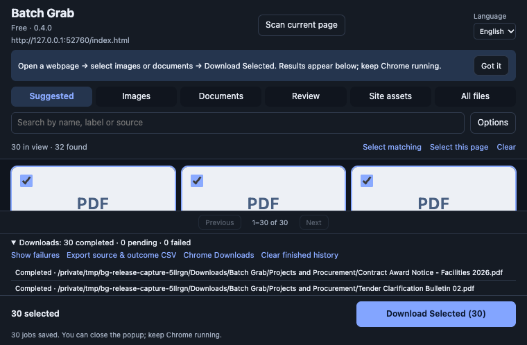

Open a webpage
Use a normal HTTP(S) page with accessible images or document links.
A free Chrome extension for selecting webpage images and collecting organized documents. Preview files, review names, and see what actually downloaded.
Use a normal HTTP(S) page with accessible images or document links.
Open Batch Grab. Preview images or switch to Documents. Review names in Details & name.
Click Download Selected. Wait for jobs-saved confirmation. Results show completed, pending and failed attempts.
Wait for the jobs-saved confirmation before closing the popup. Keep Chrome running. Reopen Download outcomes to inspect failures and actual saved paths. Open important files to verify their contents; completed means Chrome saved the response, not that the file is correct.

Try Images, Review or All files. Clear search and optional filters. Scroll the source page to load lazy images, then Scan current page. Chrome settings and store pages cannot be scanned. A login or restricted resource may require access from the website.
Works with exposed HTTP(S) resources. No protected-content bypass, crawling, automatic scrolling, conversion or streaming-video capture. Classification and naming use page context and can be wrong.